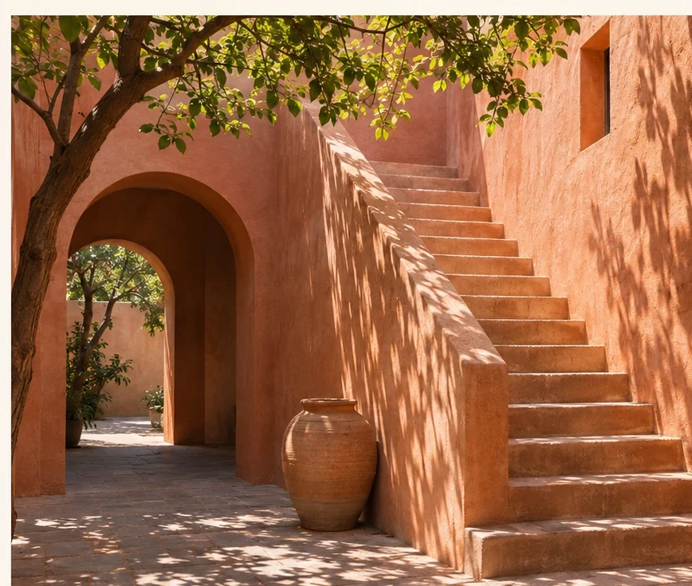

建筑影像札记
从拱门进入，沿墙拾级，再回望树下。跟着三处取景，读阳光怎样改变庭院的尺度。

取景 01 / 03
从亮处向里看，拱下先出现一段暗色通道。更远的树从第二道拱边露出一角，视线越过阴影，才在庭院另一侧停下来。
取景 02 / 03
斜光把踏步的边缘一层层标出来。视线沿着扶墙上移，墙面仍留着叶片的影子，硬直的阶线也因此有了停顿。
取景 03 / 03
把目光落回地面。枝叶的影子越过砖缝，和墙边的陶罐连成一个更低、更近的画面。走过拱门时，最先遇到的正是这片阴凉。